물류관리사-1교시 (2020-07-18 기출문제)
1과목: 물류관리론
1. 물류에 관한 설명으로 옳지 않은 것은?
- 생산에서 소비에 이르는 물적인 흐름이다.
- 7R 원칙이란 적절한 상품(Commodity), 품질(Quality), 수량(Quantity), 경향(Trend), 장소(Place), 인상(Impression), 가격(Price)이 고려된 원칙이다.
- 3S 1L 원칙이란 신속성(Speedy), 안전성(Safely), 확실성(Surely), 경제성(Low)이 고려된 원칙이다.
- 기업이 상품을 생산하여 고객에게 배달하기까지, 전 과정에서 장소와 시간의 효용을 창출하는 제반 활동이다.
- 원료, 반제품, 완제품을 출발지에서 소비지까지 효율적으로 이동시키는 것을 계획ㆍ실현ㆍ통제하기 위한 두 가지 이상의 활동이다.
(정답률: 60%)

2. 물류활동에 관한 설명으로 옳은 것은?
- 보관물류는 재화와 용역의 시간적인 간격을 해소하여 생산과 소비를 결합한다.
- 하역물류는 재화와 용역을 효용가치가 낮은 장소로부터 높은 장소로 이동시켜 효용가치를 증대한다.
- 정보물류는 물자의 수배송, 보관, 거래, 사용 등에 있어 적절한 재료, 용기 등을 이용하여 보호하는 기술이다.
- 유통가공물류는 물류활동과 관련된 정보 내용을 제공하여 물류관리 기능을 연결시켜 물류관리의 효율화를 추구한다.
- 수배송물류는 물자를 취급하고 이동하며, 상ㆍ하차하는 행위 등 주로 물자의 선적ㆍ하역 행위이다.
(정답률: 46%)
3. 다음 설명에 해당하는 물류의 영역은?
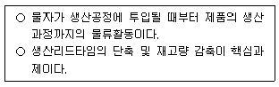
- 조달물류
- 생산물류
- 판매물류
- 회수물류
- 폐기물류
(정답률: 61%)
4. 물류환경의 변화에 관한 설명으로 옳지 않은 것은?
- 전자상거래와 홈쇼핑의 성장으로 택배시장이 확대되고 있다.
- 유통시장의 개방 및 유통업체의 대형화로 유통채널의 주도권이 제조업체에서 유통업체로 이전되고 있다.
- 제조업 중심의 생산자 물류에서 고객 중심의 소비자 물류로 전환되고 있어, 소품종 대량생산이 중요시 되고 있다.
- 환경문제, 교통정체 등으로 인해 기업의 물류비 절감과 매출 증대의 중요성이 강조되고 있다.
- 물류서비스의 수준향상과 물류운영 원가절감을 위해 아웃소싱과 3PL이 활성화되고 있다.
(정답률: 69%)
5. 물적유통(Physical Distribution)과 로지스틱스(Logistics)에 관한 설명으로 옳은 것을 모두 고른 것은?
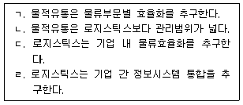
- ㄱ, ㄴ
- ㄱ, ㄷ
- ㄴ, ㄷ
- ㄷ, ㄹ
- ㄱ, ㄴ, ㄹ
(정답률: 38%)
6. 물류서비스업의 세분류와 세세분류의 연결이 옳지 않은 것은?
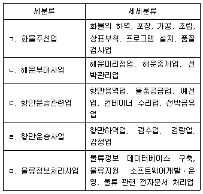
- ㄱ
- ㄴ
- ㄷ
- ㄹ
- ㅁ
(정답률: 50%)
7. 기업의 고객서비스 측정요소 중 거래 시(transaction) 서비스 요소에 해당하지 않는 것은?
- 주문의 편리성
- 주문주기 요소
- 제품 추적
- 백 오더(Back-order) 이용 가능성
- 재고품절 수준
(정답률: 46%)
8. 다음 설명에 해당하는 주문주기시간 구성요소는?
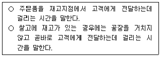
- 주문전달시간(Order Transmittal Time)
- 주문처리시간(Order Processing Time)
- 오더어셈블리시간(Order Assembly Time)
- 재고 가용성(Stock Availability)
- 인도시간(Delivery Time)
(정답률: 53%)
9. 다음 ( )에 들어갈 물류관리전략 추진단계로 옳은 것은?
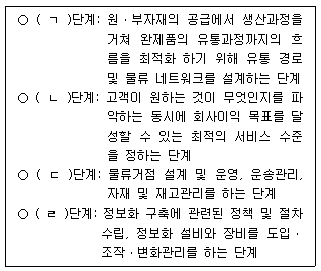
- ㄱ: 전략적, ㄴ: 구조적, ㄷ: 기능적, ㄹ: 실행
- ㄱ: 전략적, ㄴ: 기능적, ㄷ: 실행, ㄹ: 구조적
- ㄱ: 구조적, ㄴ: 실행, ㄷ: 전략적, ㄹ: 기능적
- ㄱ: 구조적, ㄴ: 전략적, ㄷ: 기능적, ㄹ: 실행
- ㄱ: 기능적, ㄴ: 구조적, ㄷ: 전략적, ㄹ: 실행
(정답률: 53%)
10. 제품수명주기 중 도입기의 물류전략에 관한 설명으로 옳은 것은?
- 광범위한 유통지역을 관리하기 위해 다수의 물류센터를 구축한다.
- 경쟁이 심화되는 단계이므로 고객별로 차별화된 물류서비스를 제공한다.
- 소수의 지점에 집중된 물류 네트워크를 구축한다.
- 장기적인 시장 점유율 확대를 위해 대규모 물류 네트워크를 구축한다.
- 물류센터를 통폐합하여 소수의 재고 보유 거점을 확보한다.
(정답률: 60%)
11. 사업부형 물류조직에 관한 설명으로 옳지 않은 것은?
- 기업의 규모가 커지고 최고 경영자가 기업의 모든 업무를 관리하기가 어려워짐에 따라 등장했다.
- 상품 중심의 사업부제와 지역 중심의 사업부제, 그리고 두 형태를 절충한 형태가 있다.
- 사업부간 횡적 교류가 활발하여 전사적 물류활동이 가능하다.
- 각 사업부 내에는 라인조직과 스탭조직이 있다.
- 각 사업부는 독립된 형태의 분권조직이다.
(정답률: 53%)
12. 4PL(Fourth Party Logistics)에 관한 설명으로 옳은 것을 모두 고른 것은?
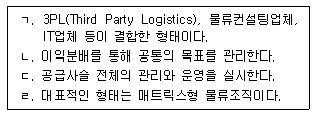
- ㄱ, ㄴ
- ㄷ, ㄹ
- ㄱ, ㄴ, ㄷ
- ㄱ, ㄷ, ㄹ
- ㄴ, ㄷ, ㄹ
(정답률: 48%)
13. 물류거점 집약화의 효과에 관한 설명으로 옳지 않은 것은?
- 공장과 물류거점 간의 운송 경로가 통합되어 대형차량의 이용이 가능하다.
- 물류거점과 고객의 배송단계에서 지점과 영업소의 수주를 통합하여 안전재고가 줄어든다.
- 운송차량의 적재율 향상이 가능하다.
- 물류거점의 기계화와 창고의 자동화 추진이 가능하다.
- 물류거점에서 재고집약과 재고관리를 함으로써 재고의 편재는 해소되나 과부족 발생가능성이 높아진다.
(정답률: 55%)
14. 물류시스템의 기능별 분류에 해당하는 것은?
- 도시물류시스템, 지역 및 국가 물류시스템, 국제물류시스템
- 구매물류시스템, 제조물류시스템, 판매물류시스템, 역물류시스템
- 운송물류시스템, 보관물류시스템, 하역물류시스템, 포장물류시스템, 유통가공물류 시스템, 물류정보시스템
- 농산물물류시스템, 도서물류시스템, 의약품물류시스템,
- 냉장(냉동)물류시스템, 화학제품물류시스템, 벌크화물물류시스템
(정답률: 52%)
15. 물류시스템 설계 시 운영적 계획의 고려사항에 해당하는 것은?
- 대고객 서비스 수준
- 설비 입지
- 주문처리
- 운송수단과 경로
- 재고정책
(정답률: 23%)
16. 물류비에 관한 설명으로 옳지 않은 것은?
- 물류활동을 실행하기 위해 발생하는 직접 및 간접 비용을 모두 포함한다.
- 영역별로 조달, 생산, 포장, 판매, 회수, 폐기 활동으로 구분된 비용이 포함된다.
- 현금의 유출입보다 기업회계기준 및 원가계산준칙을 적용해야 한다.
- 물류활동이 발생된 기간에 물류비를 배정하도록 한다.
- 물류비의 정확한 파악을 위해서는 재무회계방식보다 관리회계방식을 사용하는 것이 좋다.
(정답률: 25%)
17. 역물류비에 관한 설명으로 옳은 것은?
- 반품물류비는 판매된 상품에 대한 환불과 위약금을 포함한 모든 직접 및 간접 비용이다.
- 반품물류비에는 운송, 검수, 분류, 보관, 폐기 비용이 포함된다.
- 회수물류비는 판매된 제품과 물류용기의 회수 및 재사용에 들어가는 비용이다.
- 회수물류비에는 파렛트, 컨테이너, 포장용기의 회수비용이 포함된다.
- 제품이 정상적으로 사용된 후 소멸 처리하는 것은 폐기비용으로 간주하지 않는다.
(정답률: 39%)
18. A기업의 작년 매출액은 500억원, 물류비는 매출액의 10 %, 영업이익률은 매출액의 15 %이었다. 올해는 물류비 절감을 통해 영업이익률을 20 %로 올리려고 한다면, 작년에 비해 추가로 절감해야할 물류비는? (단, 매출액과 다른 비용 및 조건은 작년과 동일한 것으로 가정한다.)
- 10억원
- 15억원
- 20억원
- 25억원
- 30억원
(정답률: 48%)
19. A기업은 공급업체로부터 부품을 운송해서 하역하는데 40만원, 창고 입고를 위한 검수에 10만원, 생산공정에 투입하여 제조 및 가공하는데 60만원, 출고 검사 및 포장에 20만원, 트럭에 상차하여 고객에게 배송하는데 30만원, 제품 홍보와 광고에 50만원을 지출하였다. A기업의 조달물류비는?
- 50만원
- 110만원
- 130만원
- 160만원
- 210만원
(정답률: 48%)
20. 수직적 유통경로시스템(VMS: Vertical Marketing System)에 관한 설명으로 옳지 않은 것은?
- 유통경로상의 한 주체에서 계획된 프로그램에 의해 경로구성원들을 전문적으로 관리ㆍ통제하는 시스템이다.
- 기업형 VMS는 한 경로구성원이 다른 경로구성원들을 법적으로 소유ㆍ관리하는 시스템이다.
- 계약형 VMS는 경로구성원들이 각자가 수행해야 할 유통기능들을 계약에 의해 합의함으로써 공식적 경로관계를 형성하는 시스템이다.
- 계약형 VMS에는 도매상 후원의 임의 연쇄점, 소매상 협동조합, 프랜차이즈 조직이 있다.
- 관리형 VMS는 수직적 유통경로시스템 중에서 통합 또는 통제 정도가 가장 강한 시스템이다.
(정답률: 49%)
21. 도매물류사업의 기대효과 중 제조업자(생산자)를 위한 기능이 아닌 것은?
- 구색편의 기능
- 주문처리 기능
- 물류의 대형집약화 센터설립 기능
- 판매의 집약광역화 대응 기능
- 시장동향정보의 파악(생산조절) 기능
(정답률: 43%)
22. 다음 설명에 해당하는 가맹점 사업의 종류는?
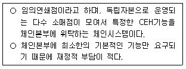
- 볼런터리 체인(Voluntary Chain)
- 레귤러 체인(Regular Chain)
- 프랜차이즈 체인(Franchise Chain)
- 협동형 체인(Cooperative Chain)
- 스페셜 체인(Special Chain)
(정답률: 41%)
23. 다음 설명에 해당하는 정보기술은?
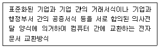
- EDI
- POS
- SIS
- EOS
- RFID
(정답률: 61%)
24. EAN 13형 바코드에 포함되지 않는 코드는?
- 국가식별 코드
- 제조업체 코드
- 공급업체 코드
- 상품품목 코드
- 체크 디지트
(정답률: 46%)
25. QR코드에 관한 설명으로 옳지 않은 것은?
- 코드 모양이 정사각형이다.
- 1차원 바코드에 비하여 오류복원 기능이 낮아 데이터 복원이 어렵다.
- 1차원 바코드에 비하여 많은 양의 정보를 수용할 수 있다.
- 흑백 격자무늬 패턴으로 정보를 나타내는 2차원 형태의 바코드이다.
- 1994년 일본의 덴소웨이브 사(社)가 개발하였다.
(정답률: 59%)
26. 물류정보기술에 관한 설명으로 옳은 것은?
- RFID(Radio Frequency Identification)는 태그 데이터의 변경 및 추가는 불가능 하나, 능동형 및 수동형 여부에 따라 메모리의 양을 다르게 정의할 수 있다.
- USN(Ubiquitous Sensor Network)는 센서 네트워크를 이용하여 유비쿼터스 환경을 구현하는 기술이며, 사물에 QR코드를 부착하여 정보를 인식하고 관리하는 정보기술을 말한다.
- CALS의 개념은 Commerce At Light Speed로부터 Computer Aided Logistics Support로 발전되었다.
- ASP(Application Service Provider)란 응용소프트웨어 공급서비스를 뜻하며 사용자 입장에서는 시스템의 자체 개발에 비하여 초기 투자비용이 더 많이 발생하는 단점이 있다.
- IoT(Internet of Things)란 사람, 사물, 공간, 데이터 등이 인터넷으로 서로 연결되어 정보가 생성ㆍ수집ㆍ활용되게 하는 사물인터넷 기술이다.
(정답률: 60%)
27. 물류정보망에 관한 설명으로 옳은 것은?
- CVO는 Carrier Vehicle Operations의 약어로서, 화물차량에 부착된 단말기를 이용하여 실시간으로 차량 및 화물을 추적ㆍ관리하는 방식이다.
- KL-NET는 무역정보망으로서, 무역정보화를 통한 국가경쟁력 강화를 목적으로 개발되었다.
- KT-NET는 물류정보망으로서, 물류업무의 온라인화를 위해 개발된 정보망이다.
- PORT-MIS는 항만운영관리 시스템으로서, 한국물류협회가 개발 및 운영하는 시스템이다.
- VAN은 Value Added Network의 약어로서, 제3자(데이터 통신업자)를 매개로 하여 기업 간 자료를 교환하는 부가가치통신망이다.
(정답률: 43%)
28. A기업은 4개의 지역에 제품 공급을 위해 지역별로 1개의 물류센터를 운영하고 있다. 물류센터에서 필요한 안전재고는 목표 서비스수준과 수요변동성을 반영한 확률 기반의 안전재고 계산공식인 z × σ를 적용하여 계산하였으며, 현재 필요한 안전재고는 각 물류센터 당 100개로 파악되고 있다. 물류센터를 중앙집중화하여 1개로 통합한다면 유지해야 할 안전재고는 몇 개인가? (단, 수요는 정규분포를 따르며, 4개 지역의 조건은 동일하다고 가정한다.)
- 100개
- 200개
- 300개
- 400개
- 500개
(정답률: 29%)
29. 공급사슬 통합의 효과가 아닌 것은?
- 생산자와 공급자 간의 정보 교환이 원활해진다.
- 생산계획에 대한 조정과 협력이 용이해진다.
- 공급사슬 전ㆍ후방에 걸쳐 수요변동성이 줄어든다.
- 물류센터 통합으로 인해 리스크 풀링(Risk Pooling)이 사라진다.
- 공급사슬 전반에 걸쳐 재고품절 가능성이 작아진다.
(정답률: 52%)
30. 공급자 재고관리(VMI: Vendor Managed Inventory)에 관한 설명으로 옳지 않은 것은?
- 유통업자가 생산자에게 판매정보를 제공한다.
- 구매자가 공급자에게 재고 주문권을 부여한다.
- 공급자가 자율적으로 공급 스케줄을 관리한다.
- 생산자와 부품공급자는 신제품을 공동 개발한다.
- 생산자는 부품공급자와 생산 계획을 공유한다.
(정답률: 49%)
31. 공급사슬관리(SCM: Supply Chain Management)의 효과에 관한 설명으로 옳지 않은 것은?
- 생산자와 공급자 간의 협력을 통하여 경쟁우위를 확보할 수 있다.
- 생산자와 공급자 간의 협력을 통하여 이익 평준화를 실현할 수 있다.
- 공급사슬 파트너십을 통하여 재고품절 위험을 감소시킬 수 있다.
- 공급사슬 파트너십을 통하여 물류비용을 절감할 수 있다.
- 공급사슬 파트너십을 통하여 소비자 만족을 극대화할 수 있다.
(정답률: 52%)
32. 표준 파렛트 T-11형과 T-12형의 치수(가로 및 세로규격)를 옳게 나열한 것은?
- T-11형: 800 mm × 1,100 mm, T-12형: 1,000 mm × 1,100 mm
- T-11형: 1,000 mm × 1,100 mm, T-12형: 1,100 mm × 1,100 mm
- T-11형: 1,000 mm × 1,100 mm, T-12형: 1,000 mm × 1,200 mm
- T-11형: 1,100 mm × 1,100 mm, T-12형: 1,000 mm × 1,200 mm
- T-11형: 1,100 mm × 1,100 mm, T-12형: 1,100 mm × 1,200 mm
(정답률: 52%)
33. 표준 파렛트 T-11형을 ISO 규격의 20피트(feet) 해상컨테이너에 2단으로 적입할 경우, 컨테이너 내에 적입할 수 있는 최대 파렛트 수량은?
- 10개
- 14개
- 16개
- 18개
- 20개
(정답률: 46%)
34. 물류표준화의 대상 분야에 해당하는 것을 모두 고른 것은?
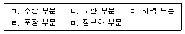
- ㄱ, ㄴ, ㅁ
- ㄴ, ㄷ, ㄹ
- ㄷ, ㄹ, ㅁ
- ㄱ, ㄴ, ㄷ, ㄹ
- ㄱ, ㄴ, ㄷ, ㄹ, ㅁ
(정답률: 59%)
35. 공동 수ㆍ배송의 효과가 아닌 것은?
- 운송차량의 공차율 증가
- 공간의 활용 증대
- 주문단위 소량화 대응 가능
- 교통혼잡 완화
- 대기오염, 소음 등 환경문제 개선
(정답률: 60%)
36. 다음 설명에 해당하는 공동 수ㆍ배송 운영방식은?
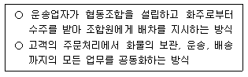
- 배송공동형
- 특정화주 공동형
- 특정지역 공동형
- 공동수주 공동배송형
- 납품대행형
(정답률: 55%)
37. 순물류(Forward Logistics)와 역물류(Reverse Logistics)의 차이점을 비교한 것으로 옳지 않은 것은?
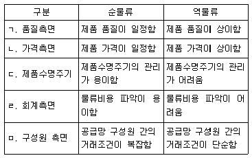
- ㄱ
- ㄴ
- ㄷ
- ㄹ
- ㅁ
(정답률: 60%)
38. 다음 설명에 해당하는 물류보안제도는?
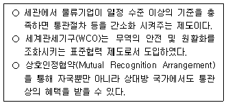
- AEO(Authorized Economic Operator)
- CSI(Container Security Initiative)
- C-TPAT(Customs Trade Partnership Against Terrorism)
- ISF(Importer Security Filing)
- ISPS(International Ship and Port Facility Security) Code
(정답률: 50%)
39. 녹색물류 추진방향으로 옳지 않은 것은?
- 공동 수ㆍ배송 추진
- 소량 다빈도 수송 추진
- 모달 쉬프트(modal shift) 추진
- 회수물류 활성화
- 저공해 운송수단 도입
(정답률: 60%)
40. 블록체인(Block Chain)에 관한 설명으로 옳지 않은 것은?
- 분산원장 또는 공공거래장부라고 불리며, 암호화폐로 거래할 때 발생할 수 있는 해킹을 막는 기술에서 출발했다.
- 다수의 상대방과 거래를 할 때 데이터를 개인 사용자들의 디지털 장비에 저장하여 공동으로 관리하는 분산형 정보기술이다.
- 비트코인은 블록체인 기술을 이용한 전자화폐이다.
- 퍼블릭 블록체인(Public Block Chain)과 프라이빗 블록체인(Private Block Chain)은 누구나 접근이 가능하다.
- 컨소시엄 블록체인(Consortium Block Chain)은 허가받은 사용자만 접근이 가능하다.
(정답률: 62%)
2과목: 화물수송론
41. 다음에서 설명하는 운임결정이론(Theory of Rate Making)은?
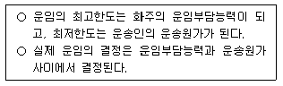
- 용역가치설
- 운임부담력설
- 생산비설
- 절충설
- 일반균형이론
(정답률: 32%)
42. 화물자동차 운영효율성 지표에 관한 설명으로 옳지 않은 것은?
- 영차율은 전체 운행거리 중 실제 화물을 적재하지 않고 운행한 비율을 나타낸다.
- 회전율은 차량이 일정한 시간 내에 화물을 운송한 횟수의 비율을 나타낸다.
- 가동률은 일정기간 동안 화물을 운송하거나 운송을 위해 운행한 일수의 비율을 나타낸다.
- 복화율은 편도 운송을 한 후 귀로에 화물운송을 어느 정도 수행했는지를 나타내는 지표이다.
- 적재율은 차량의 적재정량 대비 실제 화물을 얼마나 적재하고 운행했는지를 나타내는 지표이다.
(정답률: 51%)
43. 화물운송에 관한 설명으로 옳지 않은 것은?
- 운송은 재화에 대한 생산과 소비가 이루어지는 장소적 격차를 해소해 준다.
- 운송방식에 따라 재화의 흐름을 빠르게 또는 느리게 하여 운송비용, 재고수준, 리드타임 및 고객서비스 수준을 합리적으로 조정할 수 있다.
- 운송은 지역 간, 국가 간 경쟁을 유발하고 재화의 시장가격과 상품의 재고수준을 높인다.
- 운송은 분업을 촉진하여 국제무역의 발전에 중요한 역할을 한다.
- 운송은 재화의 효용가치를 낮은 곳에서 높은 곳으로 이동시키는 속성을 갖고 있다.
(정답률: 50%)
44. 대형 목재, 대형 파이프, H형강 등의 장척화물 운송에 적합한 화물자동차는?
- 모터 트럭(Motor Truck)
- 세미 트레일러 트럭(Semi-trailer Truck)
- 폴 트레일러 트럭(Pole-trailer Truck)
- 풀 트레일러 트럭(Full-trailer Truck)
- 더블 트레일러 트럭(Double-trailer Truck)
(정답률: 50%)
45. TMS(Transportation Management System)에 관한 설명으로 옳지 않은 것은?
- 화물운송 시 수반되는 자료와 정보를 수집하여 효율적으로 관리하고, 수주과정에서 입력한 정보를 기초로 비용이 저렴한 수송경로와 수송수단을 제공하는 시스템이다.
- 화물이 입고되어 출고되기까지의 물류데이터를 자동 처리하는 시스템으로 입고와 피킹, 재고관리, 창고 공간 효율의 최적화 등을 지원하는 시스템이다.
- 최적의 운송계획 및 차량의 일정을 관리하며 화물 추적, 운임 계산 자동화 등의 기능을 수행한다.
- 고객의 다양한 요구를 수용하면서 수ㆍ배송비용, 재고비용 등 총비용을 절감할 수 있다.
- 공급배송망 전반에 걸쳐 재고 및 운반비 절감, 대응력 개선, 공급업체와 필요부서 간의 적기 납품을 실현할 수 있다.
(정답률: 45%)
46. 컨테이너 화물의 총중량 검증(Verified Gross Mass of Container)제도에 관한 설명으로 옳지 않은 것은?
- 수출을 위하여 화물이 적재된 개별 컨테이너, 환적 컨테이너 및 공 컨테이너를 대상으로 한다.
- ‘해상에서의 인명안전을 위한 국제협약(SOLAS)’에 따라 수출컨테이너의 총중량 검증 및 검증된 정보의 제공을 의무화하면서 도입되었다.
- 화주는 수출하려는 컨테이너의 검증된 총중량 정보를 선장에게 제공하여야 한다.
- 검증된 컨테이너 총중량 정보의 오차는 해당 컨테이너 총 중량의 ± 5 % 이내에서 인정된다.
- 컨테이너 총 중량은 컨테이너에 적재되는 화물, 해당 화물을 고정 및 보호하기위한 장비, 컨테이너 자체 무게 등을 모두 합산한 중량을 의미한다.
(정답률: 28%)
47. 운송수단별 특성에 관한 설명으로 옳은 것을 모두 고른 것은?
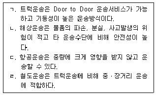
- ㄱ, ㄴ
- ㄱ, ㄹ
- ㄴ, ㄷ
- ㄴ, ㄹ
- ㄷ, ㄹ
(정답률: 56%)
48. 운임결정의 영향요인에 관한 설명으로 옳지 않은 것은?
- 화물의 파손, 분실 등 사고발생 가능성이 높아지면 운임도 높아진다.
- 적재작업이 어렵고 적재성이 떨어질수록 운임은 높아진다.
- 운송거리가 길어질수록 총 운송원가는 증가하고 운임이 높아진다.
- 화물의 밀도가 높을수록 동일한 적재용기에 많이 적재할 수 있으며 운임이 높아진다.
- 운송되는 화물의 취급단위가 클수록 운송단위당 고정비는 낮아진다.
(정답률: 43%)
49. 운송방식의 선택에 관한 설명으로 옳지 않은 것은?
- 수량이 적은 고가화물의 경우에는 항공운송이 적합하다.
- 장기운송 시 가치가 하락하는 화물의 경우에는 항공운송이 적합하다.
- 근거리운송이나 중ㆍ소량 화물의 경우에는 도로운송이 적합하다.
- 대량화물 장거리 운송의 경우에는 해상운송이 적합하다.
- 전천후 운송의 경우에는 도로운송이 적합하다.
(정답률: 54%)
50. 전용특장차에 관한 설명으로 옳지 않은 것은?
- 덤프차량은 모래, 자갈 등의 적재물을 운송하고 적재함 높이를 경사지게 하여 양하하는 차량이다.
- 분립체수송차는 반도체 등을 진동 없이 운송하는 차량이다.
- 액체수송차는 각종 액체를 수송하기 위해 탱크형식의 적재함을 장착한 차량이다.
- 냉동차는 야채 등 온도관리가 필요한 화물운송에 사용된다.
- 레미콘 믹서트럭은 적재함 위에 회전하는 드럼을 부착하고 드럼 속에 생 콘크리트를 뒤섞으면서 운송하는 차량이다.
(정답률: 54%)
51. 화물자동차의 중량에 관한 설명으로 옳지 않은 것은?
- 공차는 화물을 적재하지 않고 연료, 냉각수, 윤활유 등을 채우지 않은 상태의 화물차량 중량을 말한다.
- 최대적재량은 화물자동차 허용 최대 적재상태의 중량을 말한다.
- 자동차 연결 총중량은 화물이 최대 적재된 상태의 트레일러와 트랙터의 무게를 합한 중량을 말한다.
- 최대접지압력은 화물의 최대 적재상태에서 도로 지면 접지부에 미치는 단위면적당 중량을 말한다.
- 차량의 총중량은 차량중량, 화물적재량 및 승차중량을 모두 합한 중량을 말한다.
(정답률: 48%)
52. 화물운송의 3대 구성요소로 옳은 것은?
- 운송경로(Link), 운송연결점(Node), 운송인(Carrier)
- 운송방식(Mode), 운송인(Carrier), 화물(Cargo)
- 운송방식(Mode), 운송인(Carrier), 운송연결점(Node)
- 운송방식(Mode), 운송경로(Link), 운송연결점(Node)
- 운송방식(Mode), 운송인(Carrier), 운송경로(Link)
(정답률: 54%)
53. 화물자동차 운수사업법(2020년 적용 화물자동차 안전운임 고시)에 규정된 컨테이너 품목 안전운임에 관한 설명으로 옳은 것은?
- 덤프 컨테이너의 경우 해당구간 운임의 30 %를 가산 적용한다.
- 방사성물질이 적재된 컨테이너는 해당구간 운임에 100 %를 가산 적용한다.
- 위험물, 유독물, 유해화학물질이 적재된 컨테이너는 해당구간 운임에 25 %를 가산 적용한다.
- 화약류가 적재된 컨테이너는 해당구간 운임에 150 %를 가산 적용한다.
- TANK 컨테이너는 위험물이 아닌 경우 해당구간 운임의 30 %를 가산 적용한다.
(정답률: 19%)
54. 화물차량을 이용하여 운송할 때 발생되는 원가항목 중 고정비 성격의 항목을 모두 고른 것은?
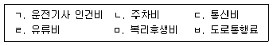
- ㄱ, ㄴ, ㅂ
- ㄱ, ㄷ, ㅁ
- ㄴ, ㄷ, ㅂ
- ㄴ, ㄹ, ㅁ
- ㄷ, ㄹ, ㅂ
(정답률: 46%)
55. 도로운송의 효율성을 제고하기 위한 방안으로 옳지 않은 것은?
- 육ㆍ해ㆍ공을 연계한 도로운송시스템을 구축하여야 한다.
- 철도운송, 연안운송, 항공운송 등이 적절한 역할분담을 할 수 있도록 하여야 한다.
- 운송업체의 소형화, 독점화 등을 통해 경쟁체제의 확립을 위한 기반을 조성해 주어야 한다.
- 비현실적인 규제를 탈피하여 시장경제원리에 입각한 자율경영 기반을 조성하여야한다.
- 도로시설의 확충 및 산업도로와 같은 화물자동차전용도로의 확충이 필요하다.
(정답률: 53%)
56. 화물자동차 운송의 단점이 아닌 것은?
- 대량화물의 운송에 불리하다.
- 철도운송에 비해 운송단가가 높다.
- 에너지 효율성이 낮다.
- 화물의 중량에 제한을 받는다.
- 배차의 탄력성이 낮다.
(정답률: 53%)
57. 화차에 컨테이너만 적재하는 운송방식을 모두 고른 것은?
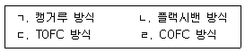
- ㄱ, ㄴ
- ㄱ, ㄷ
- ㄱ, ㄹ
- ㄴ, ㄷ
- ㄴ, ㄹ
(정답률: 32%)
58. ( )에 들어갈 컨테이너 터미널의 운영방식을 바르게 나열한 것은?
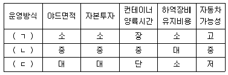
- ㄱ: 샤시방식, ㄴ: 스트래들캐리어방식, ㄷ: 트랜스테이너방식
- ㄱ: 스트래들캐리어방식, ㄴ: 샤시방식, ㄷ: 트랜스테이너방식
- ㄱ: 트랜스테이너방식, ㄴ: 스트래들캐리어방식, ㄷ: 샤시방식
- ㄱ: 스트래들캐리어방식, ㄴ: 트랜스테이너방식, ㄷ: 샤시방식
- ㄱ: 트랜스테이너방식, ㄴ: 샤시방식, ㄷ: 스트래들캐리어방식
(정답률: 22%)
59. 정박기간에 관한 설명으로 옳지 않은 것은?
- 정박기간은 Notice of Readiness 통지 후 일정기간이 경과되면 개시한다.
- SHEX는 일요일과 공휴일을 정박일수에 산입하지 않는 조건이다.
- WWD는 하역 가능한 기상조건의 날짜만 정박기간에 산입하는 조건이다.
- CQD는 해당 항구의 관습적 하역방법과 하역능력에 따라 할 수 있는 한 빨리 하역하는 조건이다.
- Running Laydays는 불가항력을 제외한 하역 개시일부터 끝날 때까지의 모든 기간을 정박기간으로 계산하는 조건이다.
(정답률: 31%)
60. 철도운송의 장점이 아닌 것은? (문제 오류로 실제 시험에서는 2, 4번이 정답처리 되었습니다. 여기서는 2번을 누르면 정답 처리 됩니다.)
- 환경 친화적인 운송이다.
- 적재 중량당 용적이 작다.
- 계획적인 운행이 가능하다.
- 적기 배차가 용이하다.
- 다양한 운임할인 제도를 운영한다.
(정답률: 51%)
61. 선적 시 양하항을 복수로 선정하고 양하항 도착 전에 최종 양하항을 지정하는 경우 발생하는 비용은?
- 항구변경할증료
- 외항추가할증료
- 환적할증료
- 양하항선택할증료
- 혼잡할증료
(정답률: 49%)
62. 용선계약 시 묵시적 확약이 아닌 것은?
- 휴항의 내용
- 신속한 항해 이행
- 부당한 이로 불가
- 위험물의 미 적재
- 내항성 있는 선박 제공
(정답률: 43%)
63. 헤이그 규칙과 함부르크 규칙을 비교 설명한 것으로 옳지 않은 것은?
- 헤이그 규칙에서는 운송인 면책이었던 항해 과실을 함부르크 규칙에서는 운송인 책임으로 규정하고 있다.
- 헤이그 규칙에서는 지연손해에 대한 명문 규정이 없으나 함부르크 규칙에서는 이를 명확히 규정하고 있다.
- 헤이그 규칙에서는 운송책임 구간이 ‘from Receipt to Delivery’였으나 함부르크 규칙에서는 ‘from Tackle to Tackle’로 축소하였다.
- 헤이그 규칙에서는 운송인의 책임 한도가 1포장당 또는 단위당 100파운드였으나 함부르크 규칙에서는 SDR을 사용하여 책임한도액을 인상하였다.
- 헤이그 규칙에서는 선박화재가 면책이었으나 함부르크 규칙에서는 면책으로 규정하지 않았다.
(정답률: 36%)
64. 철도화물 운송에 관한 설명으로 옳지 않은 것은?
- 차급운송이란 화물을 화차단위로 탁송하는 것을 말한다.
- 화차의 봉인은 내용물의 이상 유무를 검증하기 위한 것으로 철도운송인의 책임으로 하여야 한다.
- 화약류 및 컨테이너 화물의 적하시간은 3시간이다.
- 전세열차란 고객이 특정 열차를 전용으로 사용하는 열차를 말한다.
- 열차ㆍ경로지정이란 고객이 특정열차나 수송경로로 운송을 요구하거나 철도공사가 안전수송을 위해 위험물 및 특대화물 등에 특정열차와 경로를 지정하는 경우를 말한다.
(정답률: 36%)
65. 국제항공 협약과 협정에 관한 설명으로 옳지 않은 것은?
- 항공협정이란 항공협상의 산출물로서 항공운송협정 또는 항공서비스협정이라고한다.
- 국제항공에 대한 규제 체계는 양자 간 규제와 다자 간 규제로 나누어진다.
- 항공협정은 ‘바젤 협정’을 표준으로 하여 정의 규정, 국내법 적용, 운임, 협정의 개정, 폐기에 관한 사항 등을 포함한다.
- 상무협정은 항공사 간 체결한 협정으로 공동운항 협정, 수입금 공동배분 협정, 좌석 임대 협정, 보상금 지불 협정 등이 있다.
- 하늘의 자유(Freedom of the Air)는 ‘시카고 조약’에서 처음으로 명시되어 국제항공 문제를 다루는 기틀이 되었다.
(정답률: 31%)
66. 택배 표준약관(공정거래위원회 표준약관 제10026호)의 운송장에 관한 설명으로 옳지 않은 것은?
- 사업자의 상호, 대표자명, 주소 및 전화번호, 담당자(집화자)이름, 운송장 번호를 사업자는 고객(송화인)에게 교부한다.
- 운임 기타 운송에 관한 비용 및 지급 방법을 사업자는 고객(송화인)에게 교부한다.
- 고객(송화인)이 운송장에 운송물의 가액을 기재하지 아니하면 제22조 제3항에 따라 사업자가 손해배상을 할 경우 손해배상한도액은 50만원이 적용된다.
- 고객(송화인)이 운송물의 가액에 따라 할증요금을 지급하는 경우에는 각 운송가액 구간별 최저가액이 적용됨을 명시해 놓는다.
- 고객(송화인)은 운송물의 인도예정장소 및 인도예정일을 기재하여 사업자에게 교부한다.
(정답률: 33%)
67. 운송주선인의 기능에 관한 설명으로 옳은 것은?
- 운송주선인은 복합운송에서 전 운송 구간에 운송책임을 지지만 구간별 운송인과는 직접 계약을 체결하지 않는다.
- 운송주선인은 혼재운송 보다 단일 화주의 FCL화물을 주로 취급한다.
- 운송주선인은 화주를 대신하여 운송인과 운송계약을 체결하고, 화물 운송에 따른 보험 업무를 대리하지 않는다.
- 운송주선인이 작성하는 서류는 선하증권, 항공화물운송장으로 제한된다.
- 운송주선인은 화주를 대신하여 수출입화물의 통관절차를 대행할 수 있지만, 국가에 따라서 관세사 등 통관허가를 받은 자만이 할 수 있다.
(정답률: 37%)
68. 항공화물의 특성으로 옳지 않은 것은?
- 취급과 보관비용이 낮은 화물
- 긴급한 수요와 납기가 임박한 화물
- 중량이나 부피에 비해 고가인 화물
- 시간의 흐름에 따라 가치가 변동되는 화물
- 제품의 시장경쟁력 확보가 필요한 화물
(정답률: 51%)
69. 다음과 같은 요율 체계를 가지고 있는 A항공사는 중량과 용적중량 중 높은 중량 단계를 요율로 적용하고 있다. B사가 A항공사를 통해 서울에서 LA까지 항공운송할 경우 중량 40 kg, 최대길이(L) = 100 cm, 최대폭(W) = 45 cm, 최대높이(H) = 60 cm인 화물에 적용되는 운임은? (단, 용적중량은 1 kg = 6,000cm3를 적용하여 계산함)
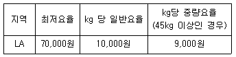
- 70,000원
- 320,000원
- 400,000원
- 4⑤,000원
- 450,000원
(정답률: 37%)
70. 택배 표준약관(공정거래위원회 표준약관 제10026호)의 운송물 수탁거절 사유를 모두 고른 것은?
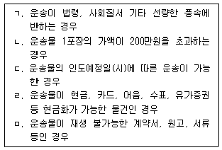
- ㄱ, ㄴ, ㄹ
- ㄱ, ㄹ, ㅁ
- ㄴ, ㄷ, ㅁ
- ㄴ, ㄹ, ㅁ
- ㄷ, ㄹ, ㅁ
(정답률: 45%)
71. 공동 수ㆍ배송시스템의 구축을 위한 전제조건이 아닌 것은?
- 물류표준화
- 유사한 배송 조건
- 물류서비스 차별화 유지
- 적합한 품목의 존재
- 일정구역 내에 배송지역 분포
(정답률: 52%)
72. 항공화물 조업 장비에 관한 설명으로 바르게 연결된 것은?
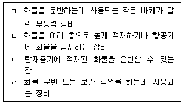
- ㄱ: Dolly, ㄴ: High Loader, ㄷ: Tug Car, ㄹ: Hand Lift Jack
- ㄱ: Dolly, ㄴ: Hand Lift Jack, ㄷ: Tug Car, ㄹ: High Loader
- ㄱ: Dolly, ㄴ: Tug Car, ㄷ: High Loader, ㄹ: Hand Lift Jack
- ㄱ: Tug Car, ㄴ: Hand Lift Jack, ㄷ: Dolly, ㄹ: High Loader
- ㄱ: Tug Car, ㄴ: High Loader, ㄷ: Dolly, ㄹ: Hand Lift Jack
(정답률: 43%)
73. 다음과 같은 운송조건이 주어졌을 때 공급지 C의 공급량 20톤의 운송비용은? (단, 공급지와 수요지 간 비용은 톤당 단위운송비용이며, 운송비용은 보겔의 추정법을 사용하여 산출함)
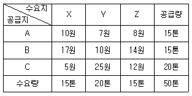
- 100원
- 135원
- 240원
- 260원
- 500원
(정답률: 38%)
74. 항공화물운임에 관한 설명으로 옳지 않은 것은?
- 동물, 화폐, 보석류, 무기, 고가 예술품 등은 일반요율 보다 높은 운송요율을 책정할 수 있다.
- 할인요율은 특정한 구간과 화물에 적용되는 요율로 일반요율보다 낮게 적용된다.
- 표준 컨테이너요율은 대체로 일반요율보다 낮은 수준의 요율이 적용된다.
- 화물의 특성상 특별한 취급과 주의를 필요로 하거나 우선적으로 운송되어야 하는 화물에는 별도의 요율을 부과할 수 있다.
- 일반요율은 일반화물에 적용하는 요율로 중량만을 기준으로 운송요율을 책정한다.
(정답률: 45%)
75. 수ㆍ배송 계획 수립의 원칙으로 옳은 것은?
- 집화와 배송은 따로 이루어지도록 한다.
- 효율적인 수송경로는 대형 차량보다 소형 차량을 우선 배차한다.
- 배송지역의 범위가 넓을 경우, 운행 경로 계획은 물류센터에서 가까운 지역부터 수립한다.
- 배송날짜가 상이한 경우에는 경유지를 구분한다.
- 배송경로는 상호 교차되도록 한다.
(정답률: 44%)
76. 3개의 수요지와 공급지가 있는 운송문제에서 최소비용법(Least-cost Method)을 적용하여 산출한 최초 가능해의 총운송비용은? (단, 공급지와 수요지 간 비용은 톤당 단위운송비용임)
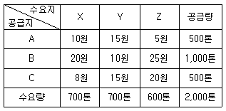
- 17,100원
- 20,000원
- 20,700원
- 21,700원
- 22,100원
(정답률: 39%)
77. 다음 그림과 같이 각 구간별 운송거리가 주어졌을 때, 물류센터 S에서 최종 목적지 G까지의 최단 경로 산출거리는? (단, 구간별 운송거리는 km임)
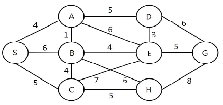
- 12 km
- 13 km
- 14 km
- 15 km
- 16 km
(정답률: 47%)
78. 물류센터에서 배송처 A와 B를 순회 배송하는 방법(물류센터 → 배송처 A → 배송처 B → 물류센터)과 배송처 A와 B를 개별 배송하는 방법(물류센터 → 배송처 A → 물류센터, 물류센터 → 배송처 B → 물류센터) 간의 운송거리 차이는?
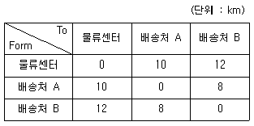
- 6 km
- 8 km
- 10 km
- 12 km
- 14 km
(정답률: 37%)
79. 공동 수ㆍ배송에 관한 설명으로 옳은 것은?
- 배송, 화물의 보관 및 집화 업무까지 공동화하는 방식을 공동납품대행형이라 한다.
- 크로스도킹은 하나의 차량에 여러 화주들의 화물을 혼재하는 것이다.
- 참여기업은 물류비 절감 효과를 기대할 수 있다.
- 소량 다빈도 화물에 대한 운송요구가 감소함에 따라 그 필요성이 지속적으로 감소 하고 있다.
- 노선집화공동형은 백화점, 할인점 등에서 공동화하는 방식이다.
(정답률: 49%)
80. 화물을 공급지 A, B, C에서 수요지 X, Y, Z까지 운송하려고 할 때 북서코너법에 의한 총운송비용은? (단, 공급지와 수요지 간 비용은 톤당 단위운송비용임)
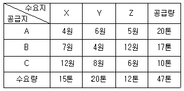
- 234원
- 244원
- 254원
- 264원
- 274원
(정답률: 41%)
3과목: 국제물류론
81. 국제물류의 기능에 관한 설명으로 옳은 것을 모두 고른 것은?
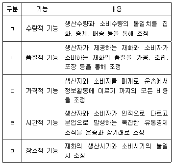
- ㄱ, ㄴ, ㄷ
- ㄱ, ㄴ, ㄹ
- ㄱ, ㄷ, ㄹ
- ㄴ, ㄷ, ㅁ
- ㄷ, ㄹ, ㅁ
(정답률: 48%)
82. 다음에서 설명하는 국제운송의 형태는?
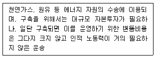
- 도로운송
- 철도운송
- 항공운송
- 해상운송
- 파이프라인운송
(정답률: 57%)
83. 다음 설명에 해당하는 국제물류시스템은?
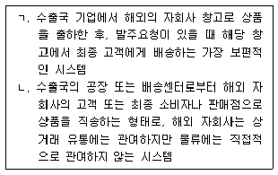
- ㄱ: 통과 시스템 ㄴ: 다국적(행) 창고 시스템
- ㄱ: 고전적 시스템 ㄴ: 직송 시스템
- ㄱ: 통과 시스템 ㄴ: 고전적 시스템
- ㄱ: 고전적 시스템 ㄴ: 다국적(행) 창고 시스템
- ㄱ: 통과 시스템 ㄴ: 직송 시스템
(정답률: 43%)
84. 최근 국제물류의 환경변화에 관한 설명으로 옳지 않은 것은?
- 국내외 물류기업 활동의 글로벌화로 국제물류의 중요성이 증대되고 있다.
- IoT 등 정보통신기술의 발전으로 국내외 물류기업들은 국제물류체계를 플랫폼화 및 고도화하고 있다.
- 컨테이너 선박이 대형화됨에 따라 항만도 점차 대형화되고 있다.
- 국제물류시장의 치열한 경쟁상황은 국내외 물류기업들 간 전략적 제휴나 인수ㆍ합병을 가속화시키고 있다.
- 국내외 화주기업들은 물류비 절감과 서비스 향상을 위해 물류전문업체를 활용하지 않고 있다.
(정답률: 54%)
85. 글로벌 공급사슬관리시스템의 효율적 설계 및 운영에 관한 설명으로 옳지 않은 것은?
- 구성원들이 시스템에 관한 목표를 명확히 정의하여 시스템의 목표를 달성하는 방향으로 의사결정을 내리게 유도한다.
- 소비자에 대한 서비스수준 향상에 기여할 수 있는 성과측정 장치를 개발하도록한다.
- 정보 공유를 통한 의사결정을 이루기 위해서는 부서 간의 협동은 중요하지 않다.
- 물류기업의 물류 하부구조 등에 대한 적극적인 투자를 수행하며 이를 통해 미래 확장가능성에 대비할 수 있어야 한다.
- 아웃소싱을 적극적으로 활용함으로써 비용과 시간을 절감하며 물류기업의 경쟁력을 최대화하는 방향으로 물류기업의 자원을 서로 결합하여야 한다.
(정답률: 56%)
86. 컨테이너 운송의 특성에 관한 설명으로 옳지 않은 것은?
- 선박의 속력이 빠르고 신속한 화물조작이 가능하다.
- 운송기간의 단축으로 수출대금의 회수가 빨라져 교역촉진이 가능하다.
- 특수 컨테이너가 개발되고 있지만, 모든 화물을 컨테이너화 할 수 없는 한계를 가지고 있다.
- 컨테이너화에는 거액의 자본이 필요하며, 선사 및 항만 직원의 교육ㆍ훈련, 관련제도 개선, 기존 설비의 교체 등에 장기간의 노력과 투자가 필요하다.
- 왕항복항(往航復航)간 물동량의 불균형이 발생해도 컨테이너선의 경우 공(空)컨테이너 회수 문제는 발생하지 않는다.
(정답률: 48%)
87. 다음에서 설명하는 컨테이너 종류로 옳은 것은?
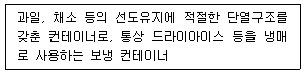
- Liquid Bulk Container
- Hard Top Container
- Side Open Container
- Insulated Container
- Skeleton Container
(정답률: 46%)
88. 다음은 CSC(1972) Annex 1 SERIOUS STRUCTURAL DEFICIENCIES IN CONTAINERS 내용의 일부이다. ( )에 들어갈 용어로 옳은 것은?
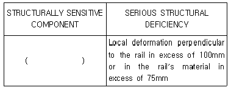
- Top Rail
- Bottom Rail
- Corner Posts
- Corner and intermediate Fittings
- Understructure
(정답률: 34%)
89. 정기선사들의 전략적 제휴에 관한 설명으로 옳지 않은 것은?
- 공동운항을 통해 선복을 공유한다.
- 화주에게 안정된 수송서비스 제공이 가능하다.
- 광석, 석탄 등 벌크 화물 운송을 중심으로 이루어지고 있다.
- 제휴선사간 상호 이해관계를 조정하기 위해 협정을 맺고 있다.
- 제휴선사간 불필요한 경쟁을 회피하는 수단으로 활용되고 있다.
(정답률: 53%)
90. 해상운송화물의 선적절차를 순서대로 올바르게 나열한 것은?
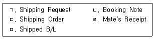
- ㄱ → ㄴ → ㄷ → ㄹ → ㅁ
- ㄱ → ㄴ → ㄹ → ㄷ → ㅁ
- ㄱ → ㄷ → ㅁ → ㄴ → ㄹ
- ㄴ → ㄱ → ㄷ → ㄹ → ㅁ
- ㄴ → ㄱ → ㅁ → ㄷ → ㄹ
(정답률: 40%)
91. 정기선에 관한 설명으로 옳지 않은 것은?
- 운임은 공시된 확정운임이 적용된다.
- 개품운송계약을 체결하고 선하증권을 사용한다.
- 다수 화주로부터 다양한 화물을 집화하여 운송한다.
- 특정한 항구 간을 운항계획에 따라 규칙적으로 반복 운항한다.
- 항해단위, 기간 등에 따라 계약조건이 다른 용선계약서를 사용한다.
(정답률: 46%)
92. 해상운송과 관련된 국제기구의 설명으로 옳은 것을 모두 고른 것은?
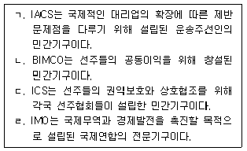
- ㄱ, ㄷ
- ㄱ, ㄹ
- ㄴ, ㄷ
- ㄴ, ㄷ, ㄹ
- ㄱ, ㄴ, ㄷ, ㄹ
(정답률: 17%)
93. 정기용선계약에 관한 설명으로 옳은 것은?
- 선박 자체만을 빌리는 선박임대차계약이다.
- 용선계약기간은 통상 한 개의 항해를 단위로 한다.
- 용선자가 선장 및 선원을 고용하고 관리ㆍ감독한다.
- 선박의 유지 및 수리비를 용선자가 부담한다.
- 기간용선계약이라고도 하며, 선박의 보험료는 선주가 부담한다.
(정답률: 29%)
94. 만재흘수선과 관련된 설명으로 옳지 않은 것은?
- 만재흘수선 마크는 TF, F, T, S, W, WNA 등이 있다.
- 만재흘수선 마크는 선박 중앙부의 양현 외측에 표시되어 있다.
- 선박의 항행대역과 계절구간에 따라 적용범위가 다르다.
- Reserved buoyancy란 선저에서 만재흘수선까지 이르는 높이를 말한다.
- 선박의 안전을 위하여 화물의 과적을 방지하고 선박의 감항성이 확보되도록 설정된 최대한도의 흘수이다.
(정답률: 46%)
95. 항해용선계약의 하역비 부담조건으로 옳은 것을 모두 고른 것은?
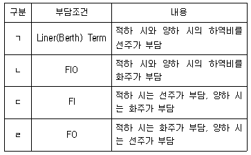
- ㄱ, ㄴ
- ㄴ, ㄷ
- ㄷ, ㄹ
- ㄱ, ㄴ, ㄷ
- ㄱ, ㄴ, ㄷ, ㄹ
(정답률: 38%)
96. 다음 ( )에 들어갈 용어로 옳은 것은?
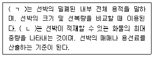
- ㄱ: 총톤수 ㄴ: 재화중량톤수
- ㄱ: 총톤수 ㄴ: 재화용적톤수
- ㄱ: 순톤수 ㄴ: 재화중량톤수
- ㄱ: 배수톤수 ㄴ: 재화용적톤수
- ㄱ: 배수톤수 ㄴ: 운하톤수
(정답률: 44%)
97. 복합운송인의 책임에 관한 설명으로 옳은 것은?
- 과실책임(liability for negligence)원칙은 선량한 관리자로서 복합운송인의 적절한 주의의무를 전제로 한다.
- 엄격책임(strict liability)원칙은 과실의 유무를 묻지 않고 운송인이 결과를 책임지는 것이지만, 불가항력 등의 면책을 인정한다.
- 무과실책임(liability without negligence)원칙은 운송인의 면책조항을 전혀 인정하지 않는다.
- 단일책임체계(uniform liability system)에서 복합운송인이 전 운송구간의 책임을 지지만, 책임의 내용은 발생구간에 적용되는 책임체계에 의해 결정된다.
- 이종책임체계(network liability system)는 UN국제복합운송조약이 채택하고 있는 체계로 단일변형책임체계라고도 한다.
(정답률: 19%)
98. 다음에서 설명하는 국제항공기구를 올바르게 나열한 것은?
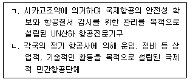
- ㄱ: IATA ㄴ: ICAO
- ㄱ: ICAO ㄴ: IATA
- ㄱ: IATA ㄴ: FAI
- ㄱ: ICAO ㄴ: FAI
- ㄱ: FAI ㄴ: IATA
(정답률: 43%)
99. 항공운송인의 책임을 규정한 국제조약에 관한 설명으로 옳지 않은 것은?
- 1929년 체결된 Warsaw Convention은 국제항공운송인의 책임과 의무를 규정한 최초의 조약이다.
- 1955년 채택된 Hague Protocol에서는 여객에 대한 운송인의 보상 책임한도액을 인상했다.
- 1966년 발효된 Montreal Agreement에서는 화물에 대한 운송인의 보상 책임한도액을 인상했다.
- 1971년 채택된 Guatemala Protocol에서는 운송인의 절대책임이 강조되었다.
- Montreal 추가 의정서에서는 IMF의 SDR이 통화의 환산단위로 도입되었다.
(정답률: 19%)
100. 항공화물운송에 관한 설명으로 옳지 않은 것은?
- 해상화물운송에 비해 신속하고 화물의 파손율도 낮은 편이다.
- 항공여객운송에 비해 계절적 변동이 적은 편이다.
- 해상화물운송에 비해 운송비용이 높은 편이다.
- 항공여객운송에 비해 왕복운송의 비중이 높다.
- 해상화물운송에 비해 고가의 소형화물 운송에 적합하다.
(정답률: 52%)
101. 국제복합운송에 관한 설명으로 옳지 않은 것은?
- 국제복합운송은 국가 간 운송으로 2가지 이상의 운송수단이 연계되어야 한다.
- 일관운임(through rate)은 국제복합운송의 기본요건이 아니다.
- NVOCC는 선박을 직접 보유하지는 않지만, 화주와 운송계약을 체결하고 복합운송 서비스를 제공한다.
- Containerization으로 인한 일관운송의 발전은 해륙복합운송을 비약적으로 발전시켰다.
- 국제복합운송을 통해 국가 간 운송에서도 Door to Door 운송을 실현할 수 있다.
(정답률: 49%)
102. 다음에서 설명하는 Freight Forwarder의 업무는?
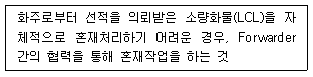
- Buyer's consolidation
- Shipper's consolidation
- Project cargo service
- Co-loading service
- Break bulk service
(정답률: 29%)
103. 다음에서 설명하는 복합운송경로는?
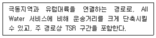
- Canada Land Bridge
- America Land Bridge
- Mini Land Bridge
- Micro Land Bridge
- Siberia Land Bridge
(정답률: 43%)
104. 다음은 부산항에서 미국 내륙의 시카고로 향하는 화물의 복합운송경로이다. 각각의 설명에 해당하는 것을 올바르게 나열한 것은?
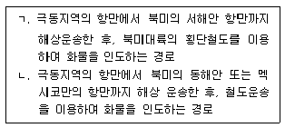
- ㄱ: IPI ㄴ: RIPI
- ㄱ: MLB ㄴ: OCP
- ㄱ: IPI ㄴ: OCP
- ㄱ: OCP ㄴ: MLB
- ㄱ: RIPI ㄴ: IPI
(정답률: 33%)
1⑤. 신용장통일규칙(UCP 600) 제20조의 선하증권 수리요건에 관한 설명으로 옳지 않은 것은?
- 운송인의 명칭이 표시되어 있고, 지정된 운송인 뿐만 아니라 선장 또는 그 지정대리인이 발행하고 서명 또는 확인된 것
- 물품이 신용장에서 명기된 선적항에서 지정된 선박에 본선적재 되었다는 것을 인쇄된 문언이나 본선적재필 부기로 명시한 것
- 운송조건을 포함하거나 또는 운송조건을 포함하는 다른 자료를 참조하고 있는 것
- 용선계약에 따른다는 표시를 포함하고 있는 것
- 단일의 선하증권 원본 또는 2통 이상의 원본으로 발행된 경우에는, 선하증권 상에 표시된 대로 전통인 것
(정답률: 33%)
106. 선하증권의 종류에 관한 설명으로 옳지 않은 것은?
- Stale B/L은 선적일로부터 21일이 경과한 선하증권이다.
- Order B/L은 수화인란에 특정인을 기재하고 있는 선하증권이다.
- Third Party B/L은 선하증권 상에 표시되는 송화인은 통상 신용장의 수익자 이지만, 수출입거래의 매매당사자가 아닌 제3자가 송화인이 되는 경우에 발행되는 선하증권이다.
- Red B/L은 선하증권 면에 보험부보 내용이 표시되어, 항해 중 해상사고로 입은 화물의 손해를 선박회사가 보상해 주는데, 이러한 문구들이 적색으로 표기되어 있는 선하증권이다.
- Clean B/L은 물품의 본선 적재 시에 물품의 상태가 양호할 때 발행되는 선하 증권이다.
(정답률: 40%)
107. 항공화물운송장(AWB)과 선하증권(B/L)에 관한 설명으로 옳은 것은?
- AWB는 기명식으로만 발행된다.
- B/L은 일반적으로 본선 선적 후 발행하는 수취식(received)으로 발행된다.
- AWB는 유통성이 있는 유가증권이다.
- B/L은 송화인이 작성하여 운송인에게 교부한다.
- AWB는 B/L과 달리 상환증권이다.
(정답률: 33%)
108. 다음에서 설명하는 물류보안 관련 용어는?
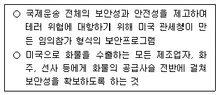
- CSI
- ISF
- C-TPAT
- PIP
- 24-Hour Rule
(정답률: 35%)
109. 다음은 해상화물운송장을 위한 CMI통일규칙(1990)의 일부이다. ( )에 공통으로 들어갈 내용을 올바르게 나열한 것은?
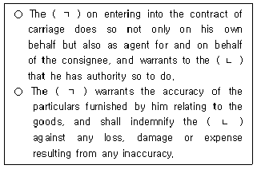
- ㄱ: shipper ㄴ: consignee
- ㄱ: carrier ㄴ: consignee
- ㄱ: shipper ㄴ: carrier
- ㄱ: carrier ㄴ: shipper
- ㄱ: shipper ㄴ: master
(정답률: 18%)
110. 다음은 신용장통일규칙(UCP 600) 제3조 내용의 일부이다. ( )에 들어갈 내용을 올바르게 나열한 것은?
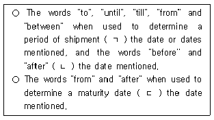
- ㄱ: include, ㄴ: exclude, ㄷ: exclude
- ㄱ: include, ㄴ: exclude, ㄷ: include
- ㄱ: include, ㄴ: include, ㄷ: exclude
- ㄱ: exclude, ㄴ: include, ㄷ: include
- ㄱ: exclude, ㄴ: include, ㄷ: exclude
(정답률: 37%)
111. 비엔나협약(CISG, 1980)의 적용 제외 대상으로 옳지 않은 것은?
- 경매에 의한 매매
- 강제집행 또는 기타 법률상의 권한에 의한 매매
- 주식, 지분, 투자증권, 유통증권 또는 통화의 매매
- 선박, 항공기의 매매
- 원유, 석탄, 가스, 우라늄 등의 매매
(정답률: 33%)
112. 무역계약의 주요 조건에 관한 설명으로 옳은 것은?
- D/P(Documents against Payment)는 관련 서류가 첨부된 기한부(Usance) 환어음을 통해 결제하는 방식이다.
- 표준품 매매(Sales by Standard)란 공산품과 같이 생산될 물품의 정확한 견본의 제공이 용이한 물품의 거래에 주로 사용된다.
- 신용장 방식에 의한 거래에서 벌크 화물(bulk cargo)에 관하여 과부족을 금지하는 문언이 없는 한, 5 %까지의 과부족이 용인된다.
- CAD(Cash Against Document)는 추심에 관한 통일규칙에 의거하여 환어음을 추심하여 대금을 영수한다.
- FAQ(Fair Average Quality)는 양륙항에서 물품의 품질에 의하여 품질을 결정하는 방법이다.
(정답률: 31%)
113. 다음은 MIA(1906) 내용의 일부이다. ( )에 들어갈 용어가 올바르게 나열된 것은?
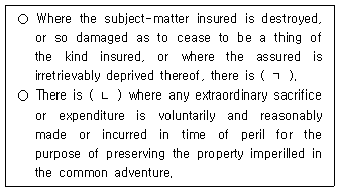
- ㄱ: an actual total loss ㄴ: a particular average act
- ㄱ: a constructive total loss ㄴ: a general average act
- ㄱ: an actual total loss ㄴ: a general average act
- ㄱ: a particular average act ㄴ: a subrogation
- ㄱ: a constructive total loss ㄴ: a salvage charge
(정답률: 27%)
114. ICC(C)(2009)에서 담보되는 손해는?
- 피난항에서의 화물의 양하(discharge)로 인한 손해
- 지진 또는 낙뢰에 인한 손해
- 갑판유실로 인한 손해
- 본선, 부선 또는 보관장소에 해수 또는 하천수의 유입으로 인한 손해
- 선박 또는 부선의 불내항(unseaworthiness)으로 인한 손해
(정답률: 30%)
115. 다음은 IncotermsⓇ 2020 소개문(introduction)의 일부이다. ( )에 들어갈 용어가 올바르게 나열된 것은?
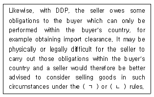
- ㄱ: DAP ㄴ: DDP
- ㄱ: CPT ㄴ: DAP
- ㄱ: DAT ㄴ: DPU
- ㄱ: DAP ㄴ: DPU
- ㄱ: CIP ㄴ: DAT
(정답률: 37%)
116. IncotermsⓇ 2020의 CIF 규칙에 관한 설명으로 옳지 않은 것은?
- 물품의 멸실 및 손상의 위험은 물품이 선박에 적재된 때 이전된다.
- 매수인은 자신의 운송계약 상 목적항 내의 명시된 지점에서 양하에 관하여 비용이 발생한 경우에 당사자 간에 달리 합의되지 않는 한, 그러한 비용을 매도인으로부터 별도로 상환받을 권리가 없다.
- 해상운송이나 내수로운송에만 사용된다.
- 해당되는 경우에 매도인이 물품의 수출통관을 해야 한다.
- 매수인은 매도인에 대하여 운송계약을 체결할 의무가 없다.
(정답률: 22%)
117. 다음은 IncotermsⓇ 2020의 DPU 규칙에 관한 내용이다. 밑줄 친 부분 중 옳지 않은 것은?
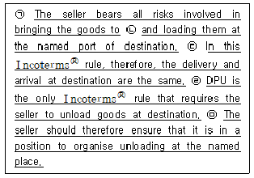
- ㉠
- ㉡
- ㉢
- ㉣
- ㉤
(정답률: 30%)
118. 무역분쟁의 해결에 이용되는 ADR(Alternative Dispute Resolution)로 옳은 것은?
- 알선, 중재, 소송
- 소송, 중재, 조정
- 중재, 소송, 화해
- 알선, 조정, 중재
- 소송, 화해, 조정
(정답률: 42%)
119. 수출입통관과 관련하여 관세법상 내국물품이 아닌 것은?
- 우리나라에 있는 물품으로서 외국물품이 아닌 것
- 우리나라의 선박 등이 공해에서 채집하거나 포획한 수산물 등
- 입항전수입신고가 수리된 물품
- 수입신고수리전 반출승인을 받아 반출된 물품
- 외국으로부터 우리나라에 도착한 물품으로서 수입신고가 수리되기 전의 물품
(정답률: 43%)
120. IncotermsⓇ 2020에 관한 설명으로 옳지 않은 것은?
- Incoterms는 이미 존재하는 매매계약에 편입된(incorporated) 때 그 매매계약의 일부가 된다.
- 대금지급의 시기, 장소, 방법과 관세부과, 불가항력, 매매물품의 소유권 이전 문제를 다루고 있다.
- 양극단(two extremes)의 E규칙과 D규칙 사이에, 3개의 F규칙과 4개의 C규칙이 있다.
- CPT와 CIP매매에서 위험은 물품이 최초운송인에게 교부된 때 매도인으로부터 매수인에게 이전된다.
- A1/B1에서 당사자의 기본적인 물품제공/대금지급의무를 규정하고, 이어 인도 조항과 위험이전조항을 보다 두드러진 위치인 A2와 A3으로 각각 옮겼다.
(정답률: 23%)